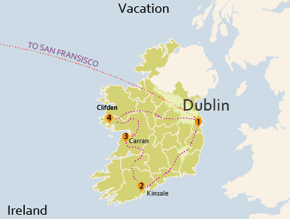

Lab 1
{kind=link}
Mr. Perdue's Ireland Vacation Get-away
First attempt in Adboe Illustrator. Download Image
Junior, Majoring in Wildlife Management and Applied Vertebrate Ecology, with a minor in Geospatial Analysis
First attempt in Adboe Illustrator. Download Image
A map of the forty-eight contiguous United States and their capital cities. Download Image
A map of important physical features, landmarks, and metropoliton cities. Download Image
A map of some select breweries found in Arcata and Eureka. Download Image
AN attempt at my first basemap: Crater Lake. Download Image
A painstakingly hand-made map of the Arcata and Mad River transit System. Download Image
Electoral districts and how they voted Republican. Download Image
A short floristic tour of some of California's native plants and wildlife in a small community park in Placer County. Download Image
A simple relief map showing the discrete locations of twenty-seven native plant species which are listed as threatened or otherwise by CNPS. Also provided is a story map, detailing the location of each species, their proper taxonomy, status, and some natural history. Download Image
An Online Flora
A brief walk and natural history through a scenic community park
Drop me a line
{kind=link}
{kind=link}
{kind=link}
{kind=link}
{kind=link}
{kind=link}
{kind=link}
{kind=link}
{kind=link}
{kind=link}
{kind=link}